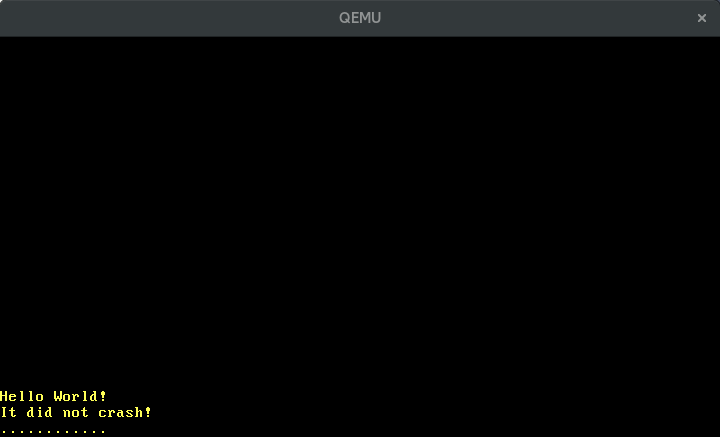

وقفههای سختافزاری
محتوای ترجمه شده: این یک ترجمه از جامعه کاربران برای پست Hardware Interrupts است. ممکن است ناقص، منسوخ شده یا دارای خطا باشد. لطفا هر گونه مشکل را در این ایشو گزارش دهید!
ترجمه توسط @hamidrezakp و @MHBahrampour.
در این پست ما کنترل کننده قابل برنامه ریزی وقفه را تنظیم می کنیم تا وقفه های سخت افزاری را به درستی به پردازنده منتقل کند. برای مدیریت این وقفهها ، موارد جدیدی به جدول توصیف کننده وقفه اضافه می کنیم ، دقیقاً مانند کارهایی که برای کنترل کننده های استثنا انجام دادیم. ما یاد خواهیم گرفت که چگونه وقفه های متناوب تایمر را گرفته و چگونه از صفحه کلید ورودی بگیریم.
این بلاگ بصورت آزاد بر روی گیتهاب توسعه داده شده. اگر مشکل یا سوالی دارید، لطفاً آنجا یک ایشو باز کنید. همچنین میتوانید در زیر این پست کامنت بگذارید. سورس کد کامل این پست را میتوانید در بِرَنچ post-07 پیدا کنید.
فهرست مطالب
🔗مقدمه
وقفهها راهی برای اطلاع به پردازنده از دستگاه های سخت افزاری متصل ارائه می دهند. بنابراین به جای اینکه پردازنده به طور دورهای صفحه کلید را برای کاراکترهای جدید بررسی کند(فرآیندی به نام polling) ، صفحه کلید میتواند هسته را برای هر فشردن کلید مطلع کند. این بسیار کارآمدتر است زیرا هسته فقط زمانی که اتفاقی افتاده است باید عمل کند. همچنین زمان واکنش سریع تری را فراهم می کند ، زیرا هسته می تواند بلافاصله و نه تنها در پول(کلمه: poll) بعدی واکنش نشان دهد.
اتصال مستقیم تمام دستگاه های سخت افزاری به پردازنده امکان پذیر نیست. در عوض ، یک کنترل کننده وقفه جداگانه ، وقفهها را از همه دستگاهها جمع کرده و سپس پردازنده را مطلع می کند:
____________ _____
Timer ------------> | | | |
Keyboard ---------> | Interrupt |---------> | CPU |
Other Hardware ---> | Controller | |_____|
Etc. -------------> |____________|
بیشتر کنترل کننده های وقفه قابل برنامه ریزی هستند ، به این معنی که آنها از اولویت های مختلف برای وقفهها پشتیبانی می کنند. به عنوان مثال ، این اجازه را می دهند تا به وقفه های تایمر اولویت بیشتری نسبت به وقفه های صفحه کلید داد تا از زمان بندی دقیق اطمینان حاصل شود.
بر خلاف استثناها ، وقفه های سخت افزاری به صورت نا هم زمان اتفاق می افتند. این بدان معنی است که آنها کاملاً از کد اجرا شده مستقل هستند و در هر زمان ممکن است رخ دهند. بنابراین ما ناگهان شکلی از همروندی در هسته خود با تمام اشکالات احتمالی مرتبط با همروندی داریم. مدل مالکیت دقیق راست در اینجا به ما کمک می کند زیرا مانع حالت تغییر پذیری گلوبال است(mutable global state). با این حال، همچنان احتمال بن بست وجود دارد، همانطور که بعداً در این پست خواهیم دید.
🔗The 8259 PIC
Intel 8259 یک کنترل کننده وقفه قابل برنامه ریزی (PIC) است که در سال 1976 معرفی شد. مدت طولانی است که با APIC جدید جایگزین شده است ، اما رابط آن هنوز به دلایل سازگاری در سیستم های فعلی پشتیبانی می شود. 8259 PIC به طور قابل ملاحظه ای آسان تر از APIC است ، بنابراین ما قبل از مهاجرت و استفاده از APIC در آینده، از آن برای معرفی وقفه استفاده خواهیم کرد.
8259 دارای 8 خط وقفه و چندین خط برای برقراری ارتباط با پردازنده است. سیستم های معمولی در آن زمان به دو نمونه از 8259 PIC مجهز بودند ، یکی اصلی و دیگری PIC ثانویه که به یکی از خطوط وقفه اولیه متصل است:
____________ ____________
Real Time Clock --> | | Timer -------------> | |
ACPI -------------> | | Keyboard-----------> | | _____
Available --------> | Secondary |----------------------> | Primary | | |
Available --------> | Interrupt | Serial Port 2 -----> | Interrupt |---> | CPU |
Mouse ------------> | Controller | Serial Port 1 -----> | Controller | |_____|
Co-Processor -----> | | Parallel Port 2/3 -> | |
Primary ATA ------> | | Floppy disk -------> | |
Secondary ATA ----> |____________| Parallel Port 1----> |____________|
این نمودار نحوه اتصال معمول خطوط وقفه را نشان می دهد. می بینیم که بیشتر 15 خط دارای یک نگاشت ثابت هستند ، به عنوان مثال خط 4 PIC ثانویه به ماوس اختصاص داده شده است.
هر کنترل کننده را می توان از طریق دو پورت ورودی/خروجی ، یک پورت “فرمان” و یک پورت “داده” پیکربندی کرد. برای کنترل کننده اصلی ، این پورتها 0x20 (فرمان) و0x21 (داده) هستند. برای کنترل کننده ثانویه آنها 0xa0 (فرمان) و 0xa1 (داده) هستند. برای اطلاعات بیشتر در مورد نحوه پیکربندی PIC ها ، به مقالهای در osdev.org مراجعه کنید.
🔗پیاده سازی
پیکربندی پیش فرض PIC ها قابل استفاده نیست، زیرا اعداد بردار وقفه را در محدوده 15-0 به پردازنده می فرستد. این اعداد در حال حاضر توسط استثناهای پردازنده اشغال شدهاند ، به عنوان مثال شماره 8 مربوط به یک خطای دوگانه است. برای رفع این مشکل همپوشانی، باید وقفه های PIC را به اعداد دیگری تغییر دهیم. دامنه واقعی مهم نیست به شرطی که با استثناها همپوشانی نداشته باشد ، اما معمولاً محدوده 47-32 انتخاب می شود، زیرا اینها اولین شماره های آزاد پس از 32 اسلات استثنا هستند.
پیکربندی با نوشتن مقادیر ویژه در پورت های فرمان و داده PIC ها اتفاق می افتد. خوشبختانه قبلا کرتای به نام pic8259 وجود دارد، بنابراین نیازی نیست که توالی راه اندازی اولیه را خودمان بنویسیم. در صورت علاقهمند بودن به چگونگی عملکرد آن، کد منبع آن را بررسی کنید، نسبتاً کوچک و دارای مستند خوبی است.
برای افزودن کرت به عنوان وابستگی ، موارد زیر را به پروژه خود اضافه می کنیم:
# in Cargo.toml
[dependencies]
pic8259 = "0.10.1"
انتزاع اصلی ارائه شده توسط کرت، ساختمان ChainedPics است که نمایانگر طرح اولیه/ثانویه PIC است که در بالا دیدیم. برای استفاده به روش زیر طراحی شده است:
// in src/interrupts.rs
use pic8259::ChainedPics;
use spin;
pub const PIC_1_OFFSET: u8 = 32;
pub const PIC_2_OFFSET: u8 = PIC_1_OFFSET + 8;
pub static PICS: spin::Mutex<ChainedPics> =
spin::Mutex::new(unsafe { ChainedPics::new(PIC_1_OFFSET, PIC_2_OFFSET) });
همانطور که در بالا اشاره کردیم، افست PIC ها را در محدوده 47-32 تنظیم می کنیم. با بسته بندی ساختمان ChainedPics در Mutex می توانیم دسترسی قابل تغییر و ایمن (از طریق متد lock) به آن داشته باشیم، که در مرحله بعدی به آن نیاز داریم. تابع ChainedPics::new ناامن است زیرا افست اشتباه ممکن است باعث رفتار نامشخص شود.
اکنون می توانیم 8259 PIC را در تابع init خود مقدار دهی اولیه کنیم:
// in src/lib.rs
pub fn init() {
gdt::init();
interrupts::init_idt();
unsafe { interrupts::PICS.lock().initialize() }; // new
}
ما از تابع initialize برای انجام مقداردهی اولیه PIC استفاده می کنیم. مانند تابع ChainedPics::new، این تابع نیز ایمن نیست زیرا در صورت عدم پیکربندی صحیح PIC می تواند باعث رفتار نامشخص شود.
اگر همه چیز خوب پیش برود ، باید هنگام اجرای cargo run پیام “It did not crash” را ببینیم.
🔗فعالسازی وقفهها
تاکنون هیچ اتفاقی نیفتاده است زیرا وقفهها همچنان در تنظیمات پردازنده غیرفعال هستند. این بدان معناست که پردازنده به هیچ وجه به کنترل کننده وقفه گوش نمی دهد، بنابراین هیچ وقفه ای نمی تواند به پردازنده برسد. بیایید این را تغییر دهیم:
// in src/lib.rs
pub fn init() {
gdt::init();
interrupts::init_idt();
unsafe { interrupts::PICS.lock().initialize() };
x86_64::instructions::interrupts::enable(); // new
}
تابع interrupts::enable از کرت x86_64 دستورالعمل خاص sti را اجرا می کند (“set interrupts”) تا وقفه های خارجی را فعال کند. اکنون وقتی cargo run را امتحان می کنیم ، می بینیم که یک خطای دوگانه رخ میدهد:

دلیل این خطای دوگانه این است که تایمر سخت افزاری (به طور دقیق تر Intel 8253) به طور پیش فرض فعال است، بنابراین به محض فعال کردن وقفهها ، شروع به دریافت وقفه های تایمر می کنیم. از آنجا که هنوز یک تابع کنترل کننده برای آن تعریف نکردهایم ، کنترل کننده خطای دوگانه فراخوانی می شود.
🔗مدیریت وقفههای تایمر
همانطور که در شکل بالا می بینیم، تایمر از خط 0 از PIC اصلی استفاده می کند. این به این معنی است که به صورت وقفه 32 (0 + افست 32) به پردازنده می رسد. به جای هارد-کد(Hardcode) کردن 32، آن را در یک اینام(enum) به نام InterruptIndex ذخیره می کنیم:
// in src/interrupts.rs
#[derive(Debug, Clone, Copy)]
#[repr(u8)]
pub enum InterruptIndex {
Timer = PIC_1_OFFSET,
}
impl InterruptIndex {
fn as_u8(self) -> u8 {
self as u8
}
fn as_usize(self) -> usize {
usize::from(self.as_u8())
}
}
اینام یک اینام C مانند است بنابراین ما می توانیم ایندکس را برای هر نوع به طور مستقیم مشخص کنیم. ویژگی repr(u8) مشخص می کند که هر نوع به عنوان u8 نشان داده می شود. در آینده انواع بیشتری برای وقفه های دیگر اضافه خواهیم کرد.
اکنون می توانیم یک تابع کنترل کننده برای وقفه تایمر اضافه کنیم:
// in src/interrupts.rs
use crate::print;
lazy_static! {
static ref IDT: InterruptDescriptorTable = {
let mut idt = InterruptDescriptorTable::new();
idt.breakpoint.set_handler_fn(breakpoint_handler);
[…]
idt[InterruptIndex::Timer.as_usize()]
.set_handler_fn(timer_interrupt_handler); // new
idt
};
}
extern "x86-interrupt" fn timer_interrupt_handler(
_stack_frame: InterruptStackFrame)
{
print!(".");
}
timer_interrupt_handler ما دارای امضای مشابه کنترل کننده های استثنای ما است ، زیرا پردازنده به طور یکسان به استثناها و وقفه های خارجی واکنش نشان می دهد (تنها تفاوت این است که برخی از استثناها کد خطا را در پشته ذخیره میکنند). ساختمان InterruptDescriptorTable تریت IndexMut را پیاده سازی می کند، بنابراین می توانیم از طریق سینتکس ایندکسدهی آرایه، به ایتم های جداگانه دسترسی پیدا کنیم.
در کنترل کننده وقفه تایمر، یک نقطه را روی صفحه چاپ می کنیم. همانطور که وقفه تایمر به صورت دوره ای اتفاق می افتد ، انتظار داریم که در هر تیک تایمر یک نقطه ظاهر شود. با این حال، هنگامی که آن را اجرا می کنیم می بینیم که فقط یک نقطه چاپ می شود:

🔗پایان وقفه
دلیل این امر این است که PIC انتظار دارد یک سیگنال صریح “پایان وقفه” (EOI) از کنترل کننده وقفه ما دریافت کند. این سیگنال به PIC می گوید که وقفه پردازش شده و سیستم آماده دریافت وقفه بعدی است. بنابراین PIC فکر می کند ما هنوز مشغول پردازش وقفه تایمر اول هستیم و قبل از ارسال سیگنال بعدی با صبر و حوصله منتظر سیگنال EOI از ما هست.
برای ارسال EOI ، ما دوباره از ساختمان ثابت PICS خود استفاده می کنیم:
// in src/interrupts.rs
extern "x86-interrupt" fn timer_interrupt_handler(
_stack_frame: InterruptStackFrame)
{
print!(".");
unsafe {
PICS.lock()
.notify_end_of_interrupt(InterruptIndex::Timer.as_u8());
}
}
notify_end_of_interrupt تشخیص میدهد که PIC اصلی یا ثانویه وقفه را ارسال کرده است و سپس از پورت های command و data برای ارسال سیگنال EOI به PIC های مربوطه استفاده می کند. اگر PIC ثانویه وقفه را ارسال کرد ، هر دو PIC باید مطلع شوند زیرا PIC ثانویه به یک خط ورودی از PIC اصلی متصل است.
ما باید مراقب باشیم که از شماره بردار وقفه صحیح استفاده کنیم، در غیر این صورت می توانیم به طور تصادفی یک وقفه مهم ارسال نشده را حذف کنیم یا باعث هنگ سیستم خود شویم. این دلیل آن است که تابع ناامن است.
اکنون هنگامی که cargo run را اجرا می کنیم، نقاطی را می بینیم که به صورت دوره ای روی صفحه ظاهر می شوند:

🔗پیکربندی تایمر
تایمر سخت افزاری که ما از آن استفاده می کنیم ، Programmable Interval Timer یا به اختصار PIT نامیده می شود. همانطور که از نام آن مشخص است ، می توان فاصله بین دو وقفه را پیکربندی کرد. ما در اینجا به جزئیات نمی پردازیم زیرا به زودی به تایمر APIC سوییچ خواهیم کرد، اما ویکی OSDev مقاله مفصلی درباره پیکربندی PIT دارد.
🔗بنبست ها
اکنون نوعی همروندی در هسته خود داریم: وقفه های تایمر به صورت ناهمزمان اتفاق می افتند ، بنابراین می توانند تابع start_ را در هر زمان قطع کنند. خوشبختانه سیستم مالکیت راست از بسیاری از مشکلات مربوط به همروندی در زمان کامپایل جلوگیری می کند. یک استثنا قابل توجه بنبست است. درصورتی که نخ(Thread) بخواهد قفلی را بدست آورد که هرگز آزاد نخواهد شد، بنبست به وجود می آید. بنابراین نخ به طور نامحدود هنگ میکند.
ما می توانیم در هسته خود بنبست ایجاد کنیم. اگر به یاد داشته باشید، ماکرو println ما تابع vga_buffer::_print را فراخوانی می کند، که با استفاده از spinlock یک WRITER گلوبال را قفل میکند.
// in src/vga_buffer.rs
[…]
#[doc(hidden)]
pub fn _print(args: fmt::Arguments) {
use core::fmt::Write;
WRITER.lock().write_fmt(args).unwrap();
}
WRITER را قفل می کند، write_fmt را روی آن فراخوانی می کند و در انتهای تابع به طور ضمنی قفل آن را باز می کند. حال تصور کنید که در حالی که WRITER قفل شده است وقفه رخ دهد و کنترل کننده وقفه نیز سعی کند چیزی را چاپ کند:
| Timestep | _start | interrupt_handler |
|---|---|---|
| 0 | calls println! | |
| 1 | print locks WRITER | |
| 2 | interrupt occurs, handler begins to run | |
| 3 | calls println! | |
| 4 | print tries to lock WRITER (already locked) | |
| 5 | print tries to lock WRITER (already locked) | |
| … | … | |
| never | unlock WRITER |
WRITER قفل شده است ، بنابراین کنترل کننده وقفه منتظر می ماند تا آزاد شود. اما این هرگز اتفاق نمی افتد ، زیرا تابع start_ فقط پس از بازگشت کنترل کننده وقفه ادامه می یابد. بنابراین کل سیستم هنگ است.
🔗ایجاد بنبست
ما می توانیم با چاپ چیزی در حلقه در انتهای تابع start_ خود ، به راحتی چنین بنبستای در هسته خود ایجاد کنیم:
// in src/main.rs
#[no_mangle]
pub extern "C" fn _start() -> ! {
[…]
loop {
use blog_os::print;
print!("-"); // new
}
}
وقتی آن را در QEMU اجرا می کنیم ، خروجی به حالت زیر دریافت میکنیم:

می بینیم که فقط تعداد محدودی خط فاصله ، تا زمانی که وقفه تایمر اول اتفاق بیفتد، چاپ می شود. سپس سیستم هنگ میکند زیرا تایمر هنگام تلاش برای چاپ یک نقطه باعث بنبست میشود. به همین دلیل است که در خروجی فوق هیچ نقطهای مشاهده نمیکنیم.
تعداد واقعی خط فاصله بین هر اجرا متفاوت است زیرا وقفه تایمر به صورت غیر همزمان انجام می شود. این عدم قطعیت، اشکال زدایی اشکالات مربوط به همروندی را بسیار دشوار می کند.
🔗رفع بنبست
برای جلوگیری از این بنبست ، تا زمانی که Mutex قفل شده باشد، می توانیم وقفهها را غیرفعال کنیم:
// in src/vga_buffer.rs
/// Prints the given formatted string to the VGA text buffer
/// through the global `WRITER` instance.
#[doc(hidden)]
pub fn _print(args: fmt::Arguments) {
use core::fmt::Write;
use x86_64::instructions::interrupts; // new
interrupts::without_interrupts(|| { // new
WRITER.lock().write_fmt(args).unwrap();
});
}
تابع without_interrupts یک کلوژر را گرفته و آن را در یک محیط بدون وقفه اجرا می کند. ما از آن استفاده می کنیم تا اطمینان حاصل کنیم که تا زمانی که Mutex قفل شده است ، هیچ وقفه ای رخ نمی دهد. اکنون هنگامی که هسته را اجرا می کنیم ، می بینیم که آن بدون هنگ کردن به کار خود ادامه می دهد. (ما هنوز هیچ نقطه ای را مشاهده نمی کنیم ، اما این به این دلیل است که سرعت حرکت آنها بسیار سریع است. سعی کنید سرعت چاپ را کم کنید، مثلاً با قرار دادن for _ in 0..10000 {} در داخل حلقه.)
ما می توانیم همین تغییر را در تابع چاپ سریال نیز اعمال کنیم تا اطمینان حاصل کنیم که هیچ بنبستی در آن رخ نمی دهد:
// in src/serial.rs
#[doc(hidden)]
pub fn _print(args: ::core::fmt::Arguments) {
use core::fmt::Write;
use x86_64::instructions::interrupts; // new
interrupts::without_interrupts(|| { // new
SERIAL1
.lock()
.write_fmt(args)
.expect("Printing to serial failed");
});
}
توجه داشته باشید که غیرفعال کردن وقفهها نباید یک راه حل کلی باشد. مشکل این است که بدترین حالت تأخیر در وقفه را افزایش می دهد ، یعنی زمانی که سیستم به وقفه واکنش نشان می دهد. بنابراین وقفهها باید فقط برای مدت زمان کوتاه غیرفعال شوند.
🔗رفع وضعیت رقابتی
اگر cargo test را اجرا کنید ، ممکن است ببینید تست test_println_output با شکست مواجه میشود:
> cargo test --lib
[…]
Running 4 tests
test_breakpoint_exception...[ok]
test_println... [ok]
test_println_many... [ok]
test_println_output... [failed]
Error: panicked at 'assertion failed: `(left == right)`
left: `'.'`,
right: `'S'`', src/vga_buffer.rs:205:9
دلیل آن وجود یک وضعیت رقابتی بین تست و کنترل کننده تایمر ماست. اگر به یاد داشته باشید ، تست به این شکل است:
// in src/vga_buffer.rs
#[test_case]
fn test_println_output() {
let s = "Some test string that fits on a single line";
println!("{}", s);
for (i, c) in s.chars().enumerate() {
let screen_char = WRITER.lock().buffer.chars[BUFFER_HEIGHT - 2][i].read();
assert_eq!(char::from(screen_char.ascii_character), c);
}
}
این تست یک رشته را در بافر VGA چاپ می کند و سپس با پیمایش دستی روی آرایه buffer_chars خروجی را بررسی می کند. وضعیت رقابتی رخ می دهد زیرا ممکن است کنترل کننده وقفه تایمر بین println و خواندن کاراکتر های صفحه اجرا شود. توجه داشته باشید که این یک رقابت داده(Data race) خطرناک نیست، که Rust در زمان کامپایل کاملاً از آن جلوگیری کند. برای جزئیات به Rustonomicon مراجعه کنید.
برای رفع این مشکل ، باید WRITER را برای مدت زمان کامل تست قفل نگه داریم ، به این ترتیب که کنترل کننده تایمر نمی تواند . را روی صفحه نمایش در میان کار تست بنویسد. تست اصلاح شده به این شکل است:
// in src/vga_buffer.rs
#[test_case]
fn test_println_output() {
use core::fmt::Write;
use x86_64::instructions::interrupts;
let s = "Some test string that fits on a single line";
interrupts::without_interrupts(|| {
let mut writer = WRITER.lock();
writeln!(writer, "\n{}", s).expect("writeln failed");
for (i, c) in s.chars().enumerate() {
let screen_char = writer.buffer.chars[BUFFER_HEIGHT - 2][i].read();
assert_eq!(char::from(screen_char.ascii_character), c);
}
});
}
ما تغییرات زیر را انجام دادیم:
- ما با استفاده صریح از متد
()lock، نویسنده را برای کل تست قفل می کنیم. به جایprintln، از ماکروwritelnاستفاده می کنیم که امکان چاپ بر روی نویسنده قبلاً قفل شده را فراهم می کند. - برای جلوگیری از یک بنبست دیگر ، وقفهها را برای مدت زمان تست غیرفعال می کنیم. در غیر این صورت ممکن است تست در حالی که نویسنده هنوز قفل است قطع شود.
- از آنجا که کنترل کننده وقفه تایمر هنوز می تواند قبل از تست اجرا شود ، قبل از چاپ رشته
sیک خط جدیدn\اضافی چاپ می کنیم. به این ترتیب ، اگر که کنترل کننده تایمر تعدادی کاراکتر.را در خط فعلی چاپ کرده باشد، از شکست تست جلوگیری می کنیم.
اکنون با تغییرات فوق ، cargo test دوباره با قطعیت موفق می شود.
این یک وضعیت رقابتی بسیار بی خطر بود که فقط باعث شکست تست میشد. همانطور که می توانید تصور کنید، اشکال زدایی سایر وضعیتهای رقابتی به دلیل ماهیت غیر قطعی بودن آنها بسیار دشوارتر است. خوشبختانه، راست مانع از رقابت دادهها می شود ، که جدیترین نوع وضعیت رقابتی است ، زیرا می تواند باعث انواع رفتارهای تعریف نشده ، از جمله کرش کردن سیستم و خراب شدن آرام و بی صدای حافظه شود.
🔗دستورالعمل hlt
تاکنون از یک حلقه خالی ساده در پایان توابع start_ و panic استفاده می کردیم. این باعث می شود پردازنده به طور بی وقفه بچرخد و بنابراین مطابق انتظار عمل می کند. اما بسیار ناکارآمد است، زیرا پردازنده همچنان با سرعت کامل کار می کند حتی اگر کاری برای انجام نداشته باشد. هنگامی که هسته را اجرا می کنید می توانید این مشکل را در مدیر وظیفه خود مشاهده کنید: فرایند QEMU در کل مدت زمان نیاز به تقریباً 100٪ پردازنده دارد.
کاری که واقعاً می خواهیم انجام دهیم این است که پردازنده را تا رسیدن وقفه بعدی متوقف کنیم. این اجازه می دهد پردازنده وارد حالت خواب شود که در آن انرژی بسیار کمتری مصرف می کند. دستورالعمل hlt دقیقاً همین کار را می کند. بیایید از این دستورالعمل برای ایجاد یک حلقه بی پایان با مصرف انرژی پایین استفاده کنیم:
// in src/lib.rs
pub fn hlt_loop() -> ! {
loop {
x86_64::instructions::hlt();
}
}
تابع instructions::hlt فقط یک پوشش نازک بر روی دستورالعمل اسمبلی است. این بی خطر است زیرا به هیچ وجه نمی تواند ایمنی حافظه را به خطر بیندازد.
اکنون می توانیم از این hlt_loop به جای حلقه های بی پایان در توابع start_ و panic استفاده کنیم:
// in src/main.rs
#[no_mangle]
pub extern "C" fn _start() -> ! {
[…]
println!("It did not crash!");
blog_os::hlt_loop(); // new
}
#[cfg(not(test))]
#[panic_handler]
fn panic(info: &PanicInfo) -> ! {
println!("{}", info);
blog_os::hlt_loop(); // new
}
بیایید lib.rs را نیز به روز کنیم:
// in src/lib.rs
/// Entry point for `cargo test`
#[cfg(test)]
#[no_mangle]
pub extern "C" fn _start() -> ! {
init();
test_main();
hlt_loop(); // new
}
pub fn test_panic_handler(info: &PanicInfo) -> ! {
serial_println!("[failed]\n");
serial_println!("Error: {}\n", info);
exit_qemu(QemuExitCode::Failed);
hlt_loop(); // new
}
اکنون وقتی هسته خود را در QEMU اجرا می کنیم ، شاهد استفاده بسیار کمتری از پردازنده هستیم.
🔗ورودی صفحه کلید
اکنون که قادر به مدیریت وقفه های دستگاه های خارجی هستیم ، سرانجام قادر به پشتیبانی از ورودی صفحه کلید هستیم. این به ما امکان می دهد برای اولین بار با هسته خود تعامل داشته باشیم.
مانند تایمر سخت افزاری ، کنترل کننده صفحه کلید نیز به طور پیش فرض از قبل فعال شده است. بنابراین با فشار دادن یک کلید ، کنترل کننده صفحه کلید وقفه را به PIC ارسال می کند و آن را به پردازنده منتقل می کند. پردازنده به دنبال یک تابع کنترل کننده در IDT میگردد ، اما ایتم مربوطه خالی است. بنابراین یک خطای دوگانه رخ می دهد.
پس بیایید یک تایع کنترل کننده برای وقفه صفحه کلید اضافه کنیم. این کاملاً مشابه نحوه تعریف کنترل کننده برای وقفه تایمر است ، فقط از یک شماره وقفه متفاوت استفاده می کند:
// in src/interrupts.rs
#[derive(Debug, Clone, Copy)]
#[repr(u8)]
pub enum InterruptIndex {
Timer = PIC_1_OFFSET,
Keyboard, // new
}
lazy_static! {
static ref IDT: InterruptDescriptorTable = {
let mut idt = InterruptDescriptorTable::new();
idt.breakpoint.set_handler_fn(breakpoint_handler);
[…]
// new
idt[InterruptIndex::Keyboard.as_usize()]
.set_handler_fn(keyboard_interrupt_handler);
idt
};
}
extern "x86-interrupt" fn keyboard_interrupt_handler(
_stack_frame: InterruptStackFrame)
{
print!("k");
unsafe {
PICS.lock()
.notify_end_of_interrupt(InterruptIndex::Keyboard.as_u8());
}
}
همانطور که در شکل بالا مشاهده می کنیم ، صفحه کلید از خط 1 در PIC اصلی استفاده می کند. این به این معنی است که به صورت وقفه 33 (1 + افست 32) به پردازنده می رسد. ما این ایندکس را به عنوان یک نوع جدید Keyboard به اینام InterruptIndex اضافه می کنیم. نیازی نیست که مقدار را صریحاً مشخص کنیم ، زیرا این مقدار به طور پیش فرض برابر مقدار قبلی بعلاوه یک که 33 نیز می باشد ، هست. در کنترل کننده وقفه ، ما یک k چاپ می کنیم و سیگنال پایان وقفه را به کنترل کننده وقفه می فرستیم.
اکنون می بینیم که وقتی کلید را فشار می دهیم k بر روی صفحه ظاهر می شود. با این حال ، این فقط برای اولین کلیدی که فشار می دهیم کار می کند ، حتی اگر به فشار دادن کلیدها ادامه دهیم ، دیگر k بر روی صفحه نمایش ظاهر نمی شود. این امر به این دلیل است که کنترل کننده صفحه کلید تا زمانی که اصطلاحاً scancode را نخوانیم ، وقفه دیگری ارسال نمی کند.
🔗خواندن اسکنکد ها
برای اینکه بفهمیم کدام کلید فشار داده شده است ، باید کنترل کننده صفحه کلید را جستجو کنیم. ما این کار را با خواندن از پورت داده کنترل کننده PS/2 ، که پورت ورودی/خروجی با شماره 0x60 است ، انجام می دهیم:
// in src/interrupts.rs
extern "x86-interrupt" fn keyboard_interrupt_handler(
_stack_frame: InterruptStackFrame)
{
use x86_64::instructions::port::Port;
let mut port = Port::new(0x60);
let scancode: u8 = unsafe { port.read() };
print!("{}", scancode);
unsafe {
PICS.lock()
.notify_end_of_interrupt(InterruptIndex::Keyboard.as_u8());
}
}
ما برای خواندن یک بایت از پورت داده صفحه کلید از نوع Port کرت x86_64 استفاده میکنیم. این بایت اسکن کد نامیده می شود و عددی است که کلید فشرده شده / رها شده را نشان می دهد. ما هنوز کاری با اسکن کد انجام نمی دهیم ، فقط آن را روی صفحه چاپ می کنیم:

تصویر بالا نشان می دهد که من آرام آرام “123” را تایپ می کنم. می بینیم که کلیدهای مجاور دارای اسکن کد مجاور هستند و فشار دادن یک کلید دارای اسکن کد متفاوت با رها کردن آن است. اما چگونه اسکنکدها را دقیقاً به کار اصلی آن کلید ترجمه کنیم؟
🔗تفسیر اسکنکد ها
سه استاندارد مختلف برای نگاشت بین اسکن کدها و کلیدها وجود دارد ، اصطلاحاً مجموعه های اسکن کد. هر سه به صفحه کلید رایانه های اولیه IBM برمی گردند: IBM XT ، IBM 3270 PC و IBM AT. خوشبختانه رایانه های بعدی روند تعریف مجموعه های جدید اسکن کد را ادامه ندادند ، بلکه مجموعه های موجود را تقلید و آنها را گسترش دادند. امروزه بیشتر صفحه کلیدها را می توان به گونه ای پیکربندی کرد که از هر کدام از سه مجموعه تقلید کند.
به طور پیش فرض ، صفحه کلیدهای PS/2 مجموعه شماره 1 (“XT”) را تقلید می کنند. در این مجموعه ، 7 بیت پایین بایت اسکنکد، کلید را تعریف می کند و مهمترین بیت فشردن (“0”) یا رها کردن (“1”) را مشخص می کند. کلیدهایی که در صفحه کلید اصلی IBM XT وجود نداشتند ، مانند کلید enter روی کیپد ، دو اسکن کد به طور متوالی ایجاد می کنند: یک بایت فرار(escape) 0xe0 و سپس یک بایت نمایانگر کلید. برای مشاهده لیست تمام اسکنکدهای مجموعه 1 و کلیدهای مربوط به آنها ، ویکی OSDev را مشاهده کنید.
برای ترجمه اسکن کدها به کلیدها ، می توانیم از عبارت match استفاده کنیم:
// in src/interrupts.rs
extern "x86-interrupt" fn keyboard_interrupt_handler(
_stack_frame: InterruptStackFrame)
{
use x86_64::instructions::port::Port;
let mut port = Port::new(0x60);
let scancode: u8 = unsafe { port.read() };
// new
let key = match scancode {
0x02 => Some('1'),
0x03 => Some('2'),
0x04 => Some('3'),
0x05 => Some('4'),
0x06 => Some('5'),
0x07 => Some('6'),
0x08 => Some('7'),
0x09 => Some('8'),
0x0a => Some('9'),
0x0b => Some('0'),
_ => None,
};
if let Some(key) = key {
print!("{}", key);
}
unsafe {
PICS.lock()
.notify_end_of_interrupt(InterruptIndex::Keyboard.as_u8());
}
}
کد بالا فشردن کلیدهای عددی 9-0 را ترجمه کرده و کلیه کلیدهای دیگر را نادیده می گیرد. از عبارت match برای اختصاص یک کاراکتر یا None به هر اسکن کد استفاده می کند. سپس با استفاده از if let اپشن key را از بین می برد. با استفاده از همان نام متغیر key در الگو که یک روش معمول برای از بین بردن انواعOption در راست است تعریف قبلی را سایه می زنیم.
اکنون می توانیم اعداد را بنویسیم:

ترجمه کلیدهای دیگر نیز به همین روش کار می کند. خوشبختانه کرت ای با نام pc-keyboard برای ترجمه اسکنکد مجموعه های اسکنکد 1 و 2 وجود دارد ، بنابراین لازم نیست که خودمان این را پیاده سازی کنیم. برای استفاده از کرت ، آن را به Cargo.toml اضافه کرده و درlib.rs خود وارد می کنیم:
# in Cargo.toml
[dependencies]
pc-keyboard = "0.5.0"
اکنون میتوانیم از این کرت برای باز نویسی keyboard_interrupt_handler استفاده کنیم:
// in/src/interrupts.rs
extern "x86-interrupt" fn keyboard_interrupt_handler(
_stack_frame: InterruptStackFrame)
{
use pc_keyboard::{layouts, DecodedKey, HandleControl, Keyboard, ScancodeSet1};
use spin::Mutex;
use x86_64::instructions::port::Port;
lazy_static! {
static ref KEYBOARD: Mutex<Keyboard<layouts::Us104Key, ScancodeSet1>> =
Mutex::new(Keyboard::new(layouts::Us104Key, ScancodeSet1,
HandleControl::Ignore)
);
}
let mut keyboard = KEYBOARD.lock();
let mut port = Port::new(0x60);
let scancode: u8 = unsafe { port.read() };
if let Ok(Some(key_event)) = keyboard.add_byte(scancode) {
if let Some(key) = keyboard.process_keyevent(key_event) {
match key {
DecodedKey::Unicode(character) => print!("{}", character),
DecodedKey::RawKey(key) => print!("{:?}", key),
}
}
}
unsafe {
PICS.lock()
.notify_end_of_interrupt(InterruptIndex::Keyboard.as_u8());
}
}
ما از ماکرو lazy_static برای ایجاد یک شی ثابت Keyboard محافظت شده توسط Mutex استفاده می کنیم. Keyboard را با طرح صفحه کلید ایالات متحده و مجموعه اسکن کد 1 مقداردهی می کنیم. پارامتر HandleControl اجازه می دهد تا ctrl+[a-z] را به کاراکتر های U+0001 تا U+001A نگاشت کنیم. ما نمی خواهیم چنین کاری انجام دهیم ، بنابراین از گزینه Ignore برای برخورد با ctrl مانند کلیدهای عادی استفاده می کنیم.
در هر وقفه ، Mutex را قفل می کنیم ، اسکن کد را از کنترل کننده صفحه کلید می خوانیم و آن را به متد add_byte منتقل می کنیم ، که اسکن کد را به یک <Option<KeyEvent ترجمه می کند. KeyEvent حاوی كلیدی است كه باعث رویداد شده و آیا این یک رویداد فشردن یا رها کردن بوده است.
برای تفسیر این رویداد کلید ، آن را به متد process_keyevent منتقل می کنیم ، که در صورت امکان رویداد کلید را به یک کاراکتر ترجمه می کند. به عنوان مثال ، بسته به فشردن کلید shift ، یک رویداد فشردن کلید A را به یک حرف کوچک a یا یک حرف بزرگ A ترجمه می کند.
با استفاده از این کنترل کننده وقفه اصلاح شده اکنون می توانیم متن بنویسیم:

🔗پیکربندی صفحه کلید
امکان پیکربندی برخی از جنبه های صفحه کلید PS/2 وجود دارد، به عنوان مثال از کدام اسکن کد استفاده کند. ما در اینجا به آن نمی پردازیم زیرا این پست به اندازه کافی طولانی شده است ، اما ویکی OSDev دارای نمای کلی دستورات پیکربندی ممکن است.
🔗خلاصه
در این پست نحوه فعال سازی و مدیریت وقفه های خارجی توضیح داده شد. ما در مورد 8259 PIC و طرح اولیه/ثانویه آن ، نگاشت دوباره اعداد وقفه و سیگنال “پایان وقفه” اطلاعات کسب کردیم. ما کنترل کنندههایی را برای تایمر سخت افزاری و صفحه کلید پیاده سازی کردیم و درباره دستورات hlt اطلاعاتی کسب کردیم که پردازنده را تا وقفه بعدی متوقف می کند.
اکنون ما قادر به تعامل با هسته خود هستیم و برخی از عناصر اساسی برای ایجاد یک پوسته(Shell) کوچک یا بازی های ساده را داریم.
🔗مرحله بعدی چیست؟
وقفه های تایمر برای یک سیستم عامل ضروری است، زیرا راهی برای قطع دوره ای روند اجرا و کنترل مجدد هسته فراهم می کند. سپس هسته می تواند به فرایند دیگری سوییچ کند و این توهم را ایجاد کند که چندین فرآیند به طور موازی اجرا می شوند.
اما قبل از اینکه بتوانیم فرایندها یا نخها را ایجاد کنیم ، به روشی برای اختصاص حافظه برای آنها نیاز داریم. در پست های بعدی، مدیریت حافظه مورد بررسی قرار می گیرد تا این عنصر اساسی ایجاد شود.
نظرات
Do you have a problem, want to share feedback, or discuss further ideas? Feel free to leave a comment here! Please stick to English and follow Rust's code of conduct. This comment thread directly maps to a discussion on GitHub, so you can also comment there if you prefer.
Instead of authenticating the giscus application, you can also comment directly on GitHub.
لطفا نظرات خود را در صورت امکان به انگلیسی بنویسید.